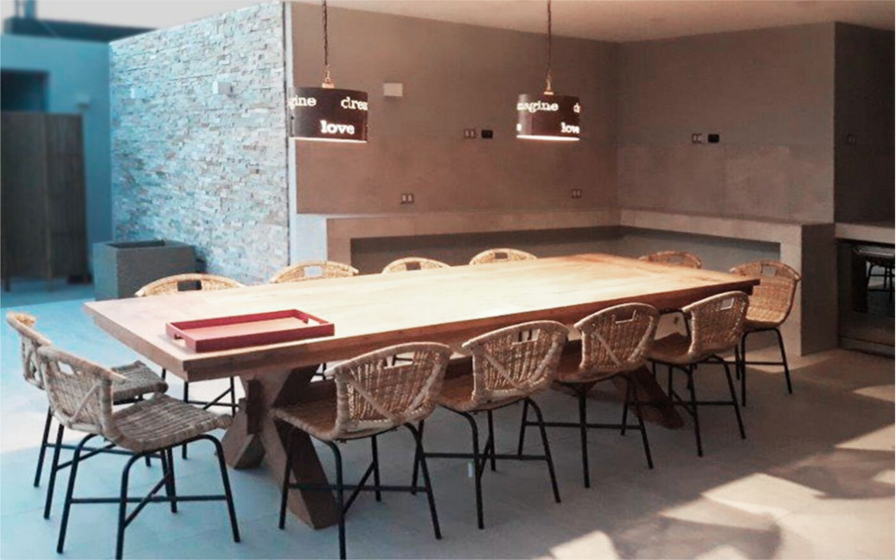

<div class="container project-view">

    <div class="row">
        <div class="col-md-8 project-images">
            
        </div>
        <div class="col-md-4">
            <div class="project-info">
                <h2 align="center" style="color:rgb(162, 94, 92)">La Reina</h2>

                <div class="details">
                    <div class="info-text">
                        <span class="title">Proyecto:</span>
                        <span class="val" style="color:rgb(162, 94, 92)">La Reina
                    </div>
                    <div class="info-text">
                        <span class="title">Ubicación:</span>
                        <span class="val" style="color:rgb(162, 94, 92)"> La Reina, Santiago.</span>
                    </div>
                    <div class="info-text">
                        <span class="title">Año:</span>
                        <span class="val" style="color:rgb(162, 94, 92)">2019</span>
                    </div>
                    <div class="info-text">
                        <span class="title">Superficie:</span>
                        <span class="val" style="color:rgb(162, 94, 92)">m2:  55 m2</span>
                    </div>
                </div>
                <h4  style="color:rgb(162, 94, 92)">Descripción</h4>
                <p align="justify">
              Realizamos este quincho en la terraza de un departamento dúplex con una increíble vista hacia la cordillera. Para eso construimos la cubierta en estructura de acero, y cerramos el perímetro con sistema sunflex, logrando un quincho versátil para ser utilizado en invierno y en verano. Por otra parte, elaboramos todo el mobiliario perimetral en estructura de acero y revestimiento de porcelanto, logrando un espacio atemporal en escala de grises.</p>

                
                </p>
                        
                        
            </div>
        </div>
    </div>
</div>
